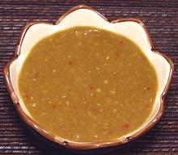

 |
Mam Nem Dipping SauceVietnam - Mam Nem | ||||
| Makes: Effort: Sched: DoAhead: |
1-1/2 cup * 15 min Best |
This popular dipping sauce has variations, but it invariably contains Mam Nem and fresh Pineapple. it is used for fried or grilled fish, and for several beef preparations, particularly the famous bo nhung dam beef hot pot. | |||
|
|
1/2 4 3 2 1 1 4 2 4 ---- |
c T cl T T t T --- |
Pineapple (1) Mam Nem Sauce (1) Garlic Thai Chili red (3) Lemon Grass stalk Sugar Lime Juice Rice Vinegar Fish Sauce (4) -- Option Water (5) |
Make: - (15 min)
|